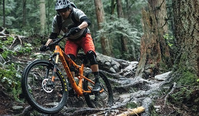
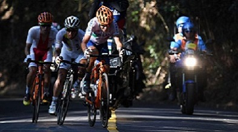
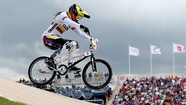
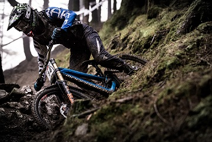
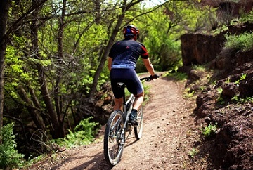

Ciclismo
En el mundo existe una gran variedad de clases de este deporte en está página queremos hablar de algunos tipos de ciclismo, en esta pagina les enseñaremos algunos tipos de ciclismo.

Ciclismo de montaña

|
Ciclismo de Ruta

|
BMX

|
Downhill

|
Ciclismo recreativo
